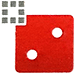
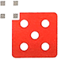

Quantum
Board Game Arena 官方规则文档
Ship Abilities
- Each type of ship has a unique special ability that can be used once per turn.
- An individual ship die can only use ONE ability per turn, even if the number on the die is changed.
- Using a ship ability does not count as an action (although TRANSPORT(2) and MANEUVER(5) are used during a movement action).
- Ship abilities can only be used on your turn, and only by ships on the map.
- A ship number cannot be changed while moving it (for example, before rolling for combat).
| Description | |
|---|---|
| 1 - BATTLESTATION - mighty weapons of destruction
STRIKE: attack a space next to the battlestation
| |
 |
2 - FLAGSHIP - command and control centers
TRANSPORT: carry an adjacent ship as you move
|
| 3 - DESTROYER - mainstay gunships of a fleet
WARP: swap places with another one of your ships on the map
| |
| 4 - FRIGATE - workhorse utility ships
MODIFY: change to a 3 or 5
| |
 |
5 - INTERCEPTOR - stealthy fighters
MANEUVER: travel diagonally
|
| 6 - SCOUT - long-range patrol ships
FREE RECONFIGURE: re-roll the ship
|
Void
- At the start of your turn, for each of your ship dice on the void map tile, you gain +1 research.
- Gaining research from the void does not use up any of your actions or special ability uses for your turn.
- Ships that earn you +1 research from the void can move and use special abilities normally that turn.
Advance Cards
- See small "see deck" links near the card selection rows.
- When research reaches 6, you can pick an advance card.
Maps
- See the tiny map link on the bottom-right of the game board for up to date maps.
- Maps as of 2022-01-01
Quantum Entanglement
- Quantum entanglement has to do with the possibility of placing 2 or more of your cubes on the same planet:
- You can normally have only one of your quantum cubes on a planet.
- However, if the only available space on the entire map is on a planet where you already have a cube, then you can place multiple cubes there.
- When you construct with quantum entanglement, add 3 to the planet number for each cube you already have there.
- Remember – quantum entanglement can only happen if you have no other choice for placing a quantum cube.
Example
- Near the end of a game, the only place you can construct a quantum cube is on a size 8 planet where you already have a quantum cube.
- Quantum entanglement would increase the planet number to 11 (8+3) for the purposes of constructing the second cube there.
Infamy
- When you are placing cubes because you reached infamy (dominance = 6), the same placement rules apply.
- You can place on a planet where you already have a cube – but only if you have no other options.
- There are no other special rules for placing a quantum entanglement cube via infamy.